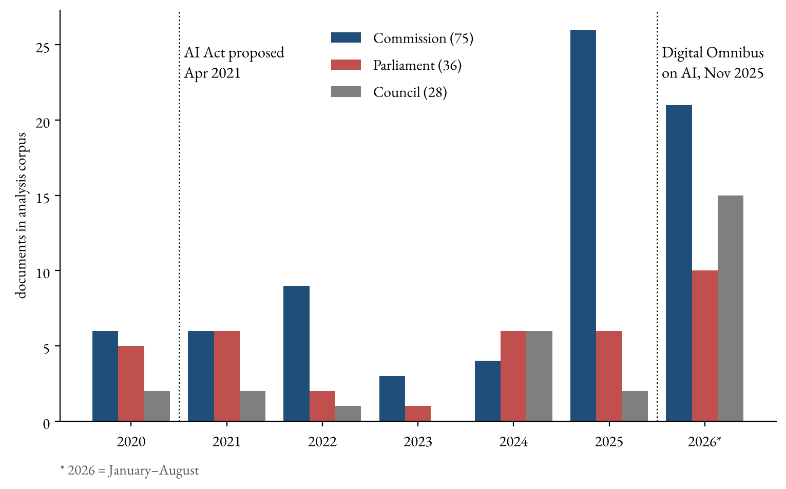
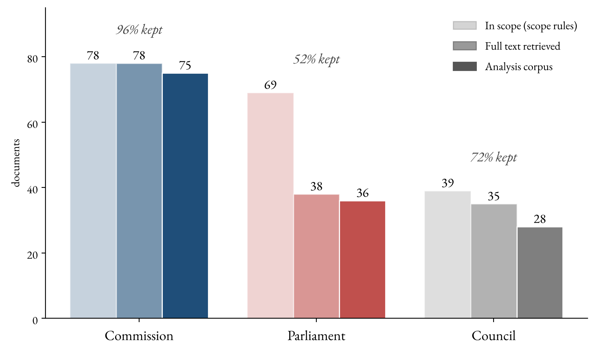
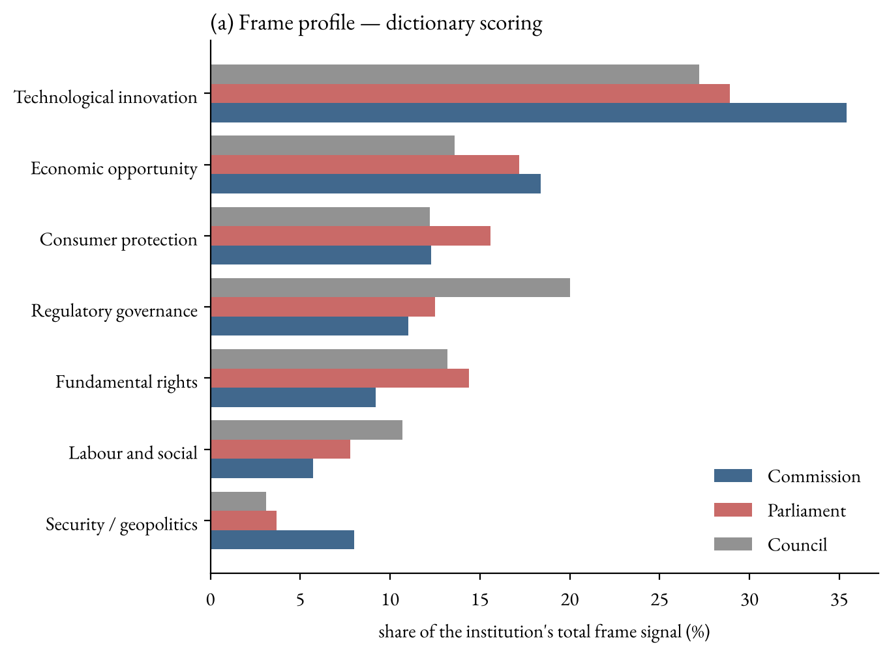
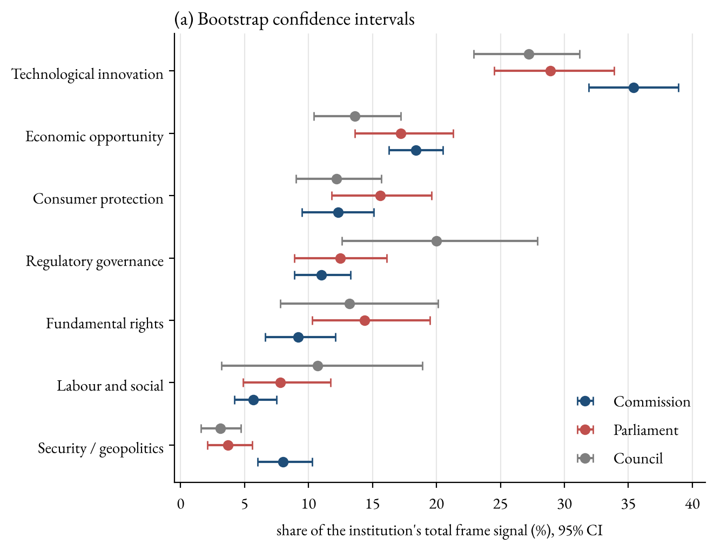
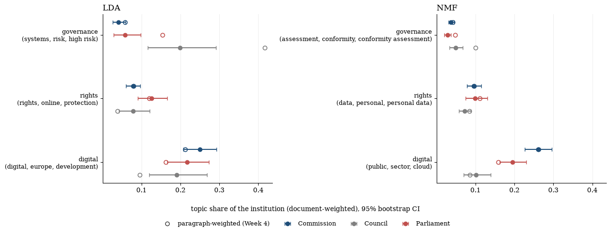
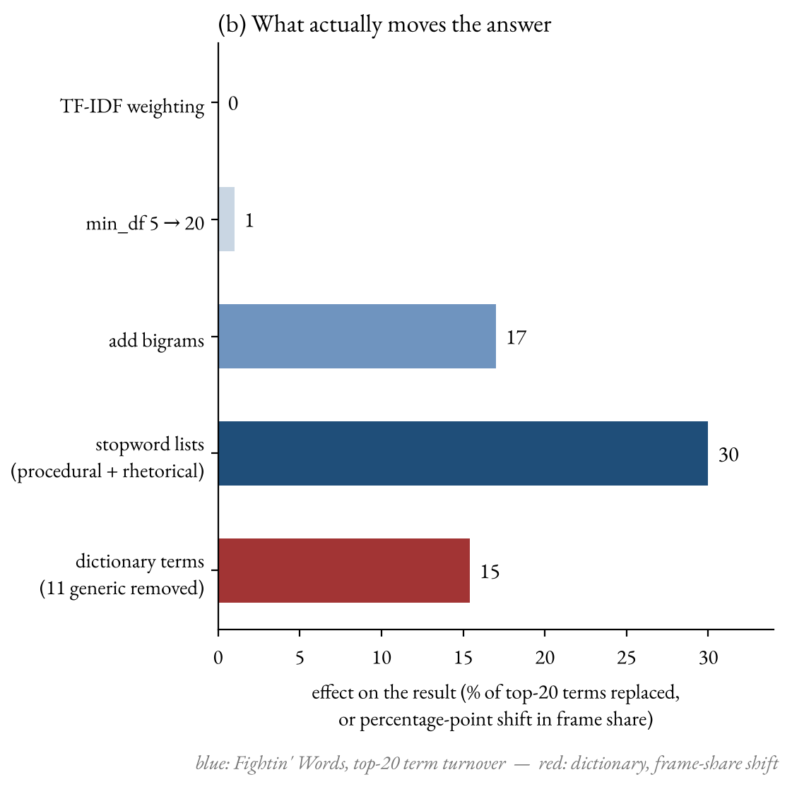
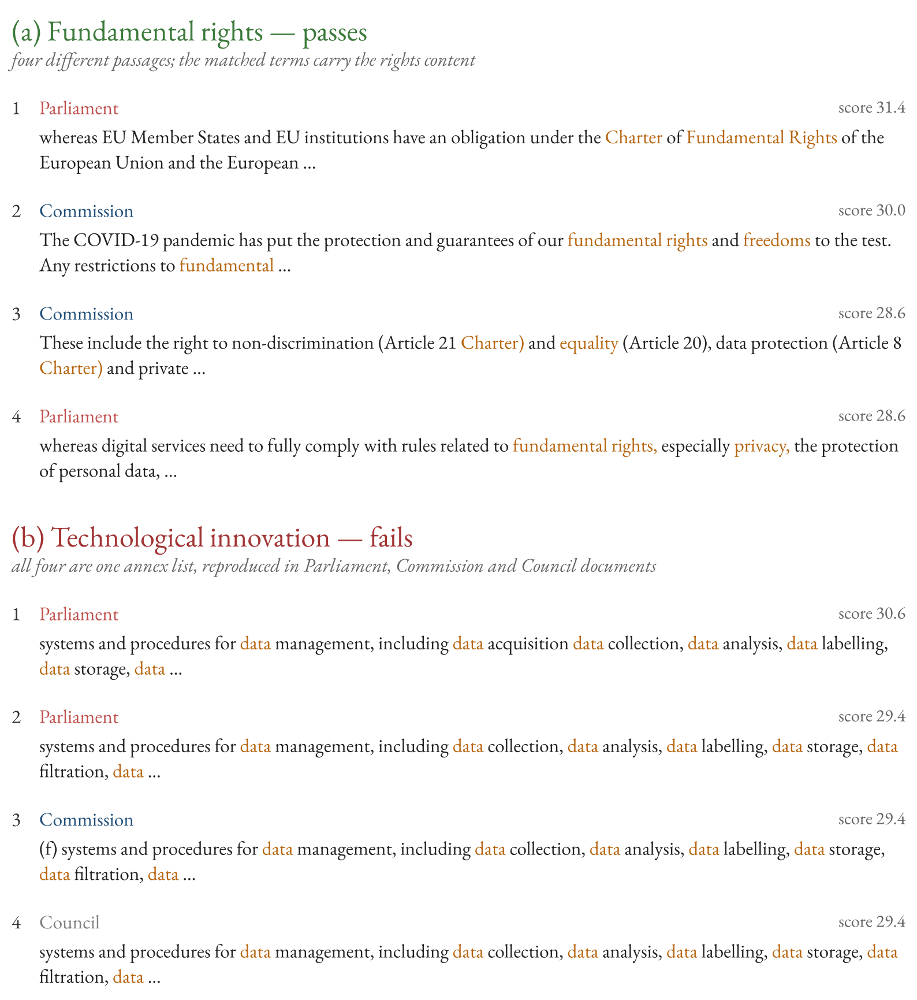

We read 139 official EU documents on AI with three computational methods and tested every difference we found. Most first impressions did not survive. Two did.
8.0%
95% interval 6.0–10.3 · others 3.7% and 3.1%
The Commission gives security and geopolitics more weight in its framing than the Parliament or the Council.
19.9%
95% interval 11.6–29.1 · Parliament 5.8%
The Council writes far more about the AI Act's rules for high-risk systems than the Parliament does.
Both patterns follow what each institution's job requires it to write. They describe the texts, not the institutions' preferences.
01 · Research question
One technology, many possible policy problems
Political institutions do not only respond to problems; they help define them. Framing means selecting some aspects of an issue and making them more salient, so that a particular definition of the problem, and a particular solution, starts to look natural (Entman 1993). Artificial intelligence can be framed as an engine of growth, a threat to fundamental rights, a security risk, a question for workers, or a matter of standards and compliance. Which framing dominates shapes which responses seem appropriate (Rochefort & Cobb 1994).
The European Union is a good place to study this, because three institutions with very different roles all wrote about the same law, the AI Act (Regulation (EU) 2024/1689):
| Institution | Role in EU law-making |
|---|---|
| Commission | Executive; proposes legislation and implements it |
| Parliament | Directly elected; co-legislator |
| Council | Governments of the member states; co-legislator |
Research question
Does an institution's role in the EU system predict how it frames AI as a policy problem?
What we expected
| # | Institution | Expected to emphasise relatively more… |
|---|---|---|
| H1 | All three | Systematically different frame profiles |
| H2 | Commission | Regulatory governance, economic policy, technological development |
| H3 | Parliament | Fundamental rights, consumer protection, social consequences |
| H4 | Council | Security, competitiveness, implementation by member states |
We treated these as expectations to test, not assumptions to confirm: a result against them counts as a finding.
02 · Data
139 official EU documents on AI, 2020–2026
All documents come from official EU repositories. The main source is CELLAR, the database of the EU Publications Office behind EUR-Lex, which tags documents by subject. We collected every document tagged artificial intelligence (or with "artificial intelligence" in its title) from 2020 onward, and added 9 Council documents from the Council's public register and 5 Parliament texts from its Open Data Portal.
We kept only texts in which an institution states or negotiates its own position: Commission communications and staff documents, Parliament resolutions and reports, Council notes and conclusions. Adopted laws were left out because all institutions sign them, and so were studies, minutes and notes that only forward someone else's text.

What we could not collect
Coverage is uneven. The Commission's documents are almost complete, but many Parliament committee opinions and amendment lists are listed in CELLAR without a downloadable text, and the Parliament website does not serve them to automated requests. We did not try to get around this. A screen for relevance then removed documents that mention AI only in passing (fewer than 0.5 mentions per 1,000 words) or are too short (under 200 words).

What we measure
Long institutional documents mix several themes, so we measure at the level of the paragraph (median 49 words). Paragraph scores are averaged into a document score, and document scores into an institution score, so that every document counts equally however long it is.
03 · Methods
Three routes to the same question
Each method can go wrong in its own way. A result that shows up in more than one of them is more convincing than any single one.
Baseline
Fightin' Words
Which single words separate two institutions? A log-odds comparison with a statistical prior that keeps rare words from topping the list by chance (Monroe, Colaresi & Quinn 2008).
Imposes: no categories.
Main measure
Seven-frame dictionary
152 words sorted into the seven frames from our proposal. Each paragraph is scored as frame words per 100 words; each institution's profile is the share of its framing that goes to each frame (the seven shares add up to 100%).
Imposes: our categories.
Cross-check
Topic models
LDA and NMF find groups of words that occur together in the same paragraphs ("topics"); we read and name them afterwards. Ten topics, chosen by how coherent their top words are.
Imposes: no categories.
The first lesson: style before substance
On raw text, Fightin' Words is dominated by document style, not framing. The Parliament's most distinctive words are regard, calls, whereas, stresses, the grammar of a resolution; the Council's are article, annex, paragraph, pursuant, the grammar of a legal text. Only after removing such procedural and rhetorical words do substantive differences appear: the Parliament's technologies, human, ethical, research against the Council's harmonisation, testing, conformity. That cleaning decision alone replaces 30% of the most distinctive words, so we report it openly rather than hide it.
04 · Results
What first appeared
The first dictionary profile seemed to fit our expectations well. The Commission was highest on technology and the economy; the Parliament was highest on fundamental rights and consumer protection, as H3 predicted; the Council was highest on regulatory governance and lowest on security.

With uncertainty added, one difference remains
Each institution has only 28 to 75 documents. To see how much a result depends on which particular documents an institution happened to write, we used a bootstrap: we redrew each institution's documents at random, with replacement, 1,000 times and recomputed the profile each time. The line around each dot covers the middle 95% of those results. We count a difference only if an institution's line does not overlap the others'.

Only the Commission's lead on security survives (8.0%, interval 6.0–10.3; the others' intervals end at 5.6 and 4.7). The Commission's technology lead overlaps with the Parliament, the Council's governance lead spans 12.6 to 27.9% on just 28 documents, and the Parliament's rights lead overlaps with the Council.
The topic models: a difference in content
In the first topic model, two governance-related topics, national enforcement authorities and requirements for high-risk AI systems, together made up 54.5% of the Council's topic weight. In the revised model (after we changed the text cleaning), the high-risk topic alone made up 41.6% of the Council's topic weight when every paragraph counts. But long Council compromise texts counted with all their paragraphs. Giving every document equal weight, as the dictionary does, cut this to 19.9%; yet it still clearly exceeds the Parliament's (interval 11.6–29.1 against 2.8–9.8).

The high-risk topic also came back in all six re-runs of the model from different random starting points, and the Council still led when we asked for twenty topics instead of ten. The rights topic, by contrast, came back in none of the six re-runs.
We applied the same non-overlap test to all ten topics of each model. In LDA, the Council's lead on the high-risk topic is the only clear difference. NMF splits the high-risk rules into five smaller topics; the Council is highest on all five, but its lead is clear on only one, the legal requirements in Chapter III of the AI Act (6.4% against the Commission's 3.8%).
We read the Council result as a difference in content: the Council's documents are largely negotiating texts on the AI Act's high-risk rules. That is not the same as framing AI as a governance problem.
05 · Checks
Where the measures work, and where they fail
Which choices move the answer?
Every text analysis rests on decisions. We tested each one separately. The substantive ones mattered: the stopword lists changed 30% of the Fightin' Words results, and removing eleven very common words from the dictionary shifted a frame share by up to 15 percentage points. A minimum word frequency changed almost nothing, because the method already discounts rare words. TF-IDF weighting does not apply to Fightin' Words, which works on raw word counts, so its bar is zero by construction rather than a tested result.

Why the technology frame was inflated
Removing each dictionary word in turn showed that a handful of words carried a lot of weight: digital alone moved a frame share by 6.6 points, data by 5.8. These are the everyday vocabulary of EU technology policy, not markers of an innovation frame. Without eleven such generic words, the Commission's technology share falls from 35% to 20% and the order of the frames changes. "Technology dominates every institution" was largely produced by a few words. What the generic words do not change is which institution leads: in all seven frames the leading institution stays the same, and the Commission's security lead grows (11.3% against 5.1% and 4.3%). We did not re-run the bootstrap on the reduced dictionary.
Do the top paragraphs read as the frame?
A high score only means that a frame's words occur often. To check what they mean in context, one of us read the ten highest-scoring paragraphs for each of the seven frames. Six frames pass. Technological innovation fails: its top paragraphs are the same annex list from the AI Act, copied into documents of all three institutions.

A last check concerned copied text: the Council's compromise texts quote the Commission's proposals, so 17% of Council paragraphs also appear in another institution's documents. Removing every copied paragraph moved no frame share by more than half a percentage point.
06 · What this means
Patterns of role and genre, not of preference
| Expectation | Verdict |
|---|---|
| H1: institutions differ | Partly supported: two robust differences |
| H2: Commission emphasises governance, economy, technology | Not supported: lowest on governance; its other leads overlap with the Parliament |
| H3: Parliament emphasises rights and consumer protection | Direction as expected, but not robust |
| H4: Council emphasises security and competitiveness | Contradicted: the Council is lowest on security; the Commission leads |
The two differences that hold up both follow from what each institution's job requires it to write. The Commission writes broad strategy documents: 9 of the 10 highest-scoring security paragraphs are the Commission's, on economic security, cybersecurity and supply chains. The Council writes the legal text of the high-risk rules. These are differences in what the institutions write, shaped by role and document genre. They do not show what the institutions prefer.
The broader lesson is methodological. Several differences that looked convincing at first sight were produced by document style, a few common words, or a handful of long documents. Only results that survive several independent checks should be read as findings.
Limitations
- Uneven coverage. We have about half of the Parliament's in-scope documents and only 28 from the Council, so many intervals are wide.
- No independent validation. No one has yet hand-coded a sample of paragraphs to test whether the scores match human judgement; the face-validity reading is a first check by one reader.
- Model sensitivity. After one change in text cleaning, only 4 of 10 LDA topics kept a close counterpart; only the high-risk topic is stable throughout.
- Different genres. 21 of 28 Council texts are legislative documents, mostly negotiating notes, and 33 of 36 Parliament texts are resolutions, so institution and genre cannot be fully separated.
What we did not do
Our proposal also planned to compare how similar the institutions' language is and how it changes over time. We dropped both: the Council has only 5 documents from before 2024, too few to compare periods, and the time went into testing whether the main differences hold.
Next steps
- Hand-code about 200 paragraphs where the measures are weakest (technology, governance, Council high-risk) and report agreement.
- Recover the missing Parliament opinions and amendment lists.
- Fit a structural topic model with the institution as a covariate (Roberts et al. 2014), so differences are estimated inside the model.
- Compare institutions within a single document genre once more documents are available.
07 · Reproducibility
Every number on this page can be rebuilt
The GitHub repository contains the collection code, the cleaned corpus with source identifiers, every analysis script, the results as data files, the figures, and our weekly progress reports. The analysis runs offline from the committed corpus in about two minutes:
pip install -r requirements.txt python notebooks/03_operationalisation.py # frame scoring, distinctive words python notebooks/05_dictionary_diagnostics.py # term influence, bootstrap, sensitivity python notebooks/06_face_validity.py # face validity, copied text python notebooks/07_figures.py # figures python notebooks/08_topic_figures.py # topic-model figures, all-topic check
The topic models are fitted in two notebooks (04_topic_modeling.ipynb, 05_topic_diagnostics.ipynb), which take much longer because 05 refits the models several times; 08_topic_figures.py redraws the topic-model figures from their saved results in reports/week5_topic_diagnostics/. Rebuilding the corpus from CELLAR needs internet access and the pdftotext tool; see the repository README, which also gives the two commands that re-run the full report (report/report.ipynb) and export it to this site.
EU documents © European Union, reused with attribution under Commission Decision 2011/833/EU.
Contributions
Tim Maurice Steiner: research design and framing; scope, cleaning and relevance-screening rules; retrieval and extraction code (collect.py, build_corpus.py) and the Parliament Open Data Portal recovery (ep_portal.py); frame dictionary and Fightin' Words (represent.py, measures.py, 03_operationalisation.py); dictionary diagnostics and face validity (diagnostics.py, 05_dictionary_diagnostics.py, 06_face_validity.py); weekly reports and this website.
Yuhan (Michelle) Qiu: CELLAR access and the first query and retrieval code (01_feasibility_test_and_initial_exploration.ipynb); inventory cross-check, format-availability diagnosis and corpus descriptive statistics (03_crosscheck_and_descriptive_stats notebooks); topic models (04_topic_modeling.ipynb) and their diagnostics: preprocessing comparison, seed stability, K sensitivity, weighting and bootstrap (05_topic_diagnostics.ipynb, 08_topic_figures.py); topic-model sections of the weekly reports.
References
Blei, D. M., Ng, A. Y., & Jordan, M. I. (2003). Latent Dirichlet allocation. Journal of Machine Learning Research, 3, 993–1022.
Efron, B., & Tibshirani, R. J. (1993). An Introduction to the Bootstrap. Chapman & Hall.
Entman, R. M. (1993). Framing: Toward clarification of a fractured paradigm. Journal of Communication, 43(4), 51–58.
Grimmer, J., & Stewart, B. M. (2013). Text as data: The promise and pitfalls of automatic content analysis methods for political texts. Political Analysis, 21(3), 267–297.
Lee, D. D., & Seung, H. S. (1999). Learning the parts of objects by non-negative matrix factorization. Nature, 401, 788–791.
Monroe, B. L., Colaresi, M. P., & Quinn, K. M. (2008). Fightin' words: Lexical feature selection and evaluation for identifying the content of political conflict. Political Analysis, 16(4), 372–403.
Roberts, M. E., Stewart, B. M., Tingley, D., et al. (2014). Structural topic models for open-ended survey responses. American Journal of Political Science, 58(4), 1064–1082.
Rochefort, D. A., & Cobb, R. W. (Eds.). (1994). The Politics of Problem Definition. University Press of Kansas.
Regulation (EU) 2024/1689 laying down harmonised rules on artificial intelligence (Artificial Intelligence Act). Official Journal of the European Union, L, 12 July 2024.
Use of generative AI. Generative AI tools (ChatGPT, Claude) were used for code recommendations, error checking and editing; details are in the AI Transparency section of the repository README.